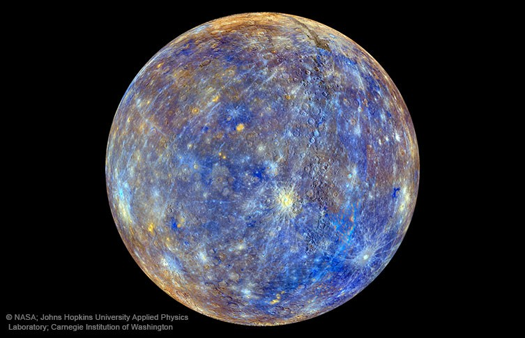
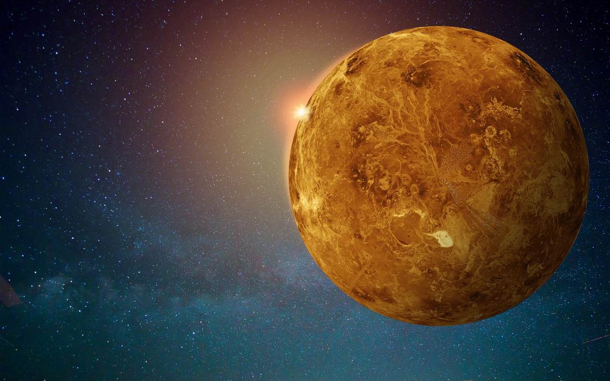
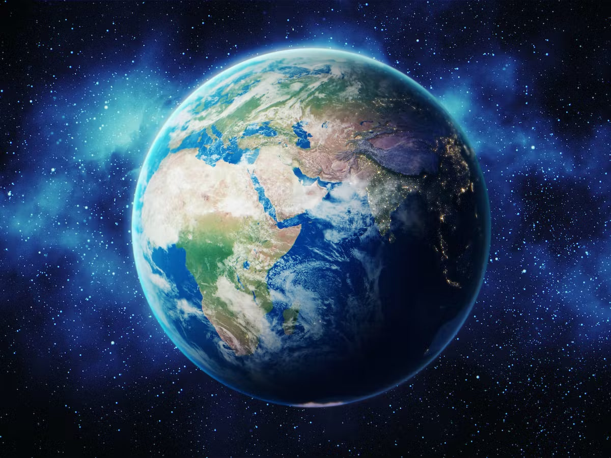
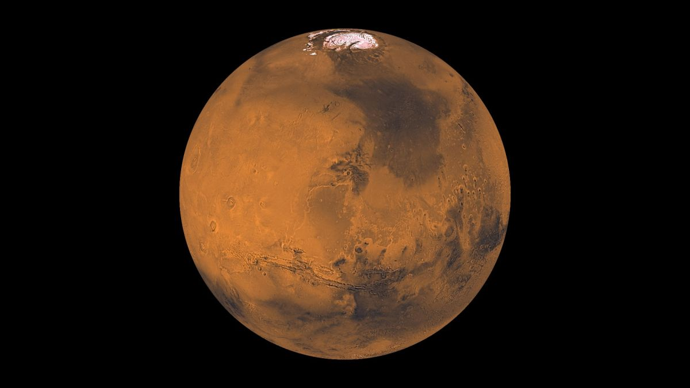
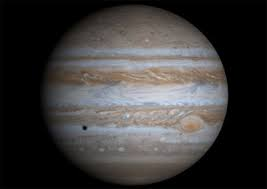
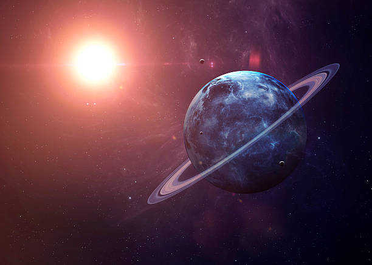
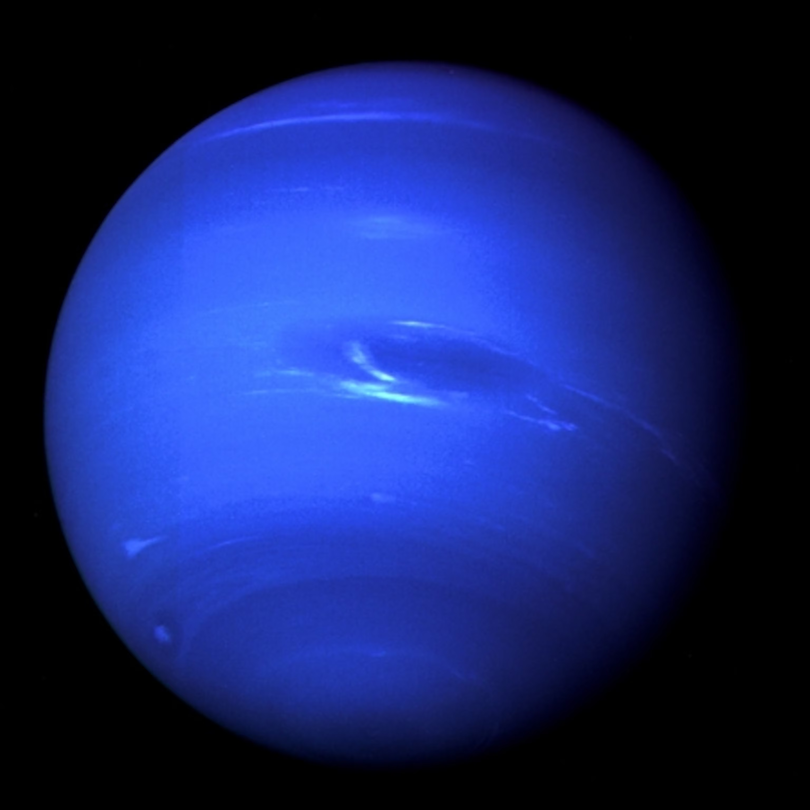

Home
Planets
About us
Latest Info

Mercury
Mercury is the smallest planet in the Solar System and the closest to the Sun. Its orbit around the Sun takes 87.97 Earth days, the shortest of all the Sun's planets.

Venus
Venus is the second planet from the Sun. It is sometimes called Earth's "sister" or "twin" planet as it is almost as large and has a similar composition. As an interior planet to Earth, Venus appears in Earth's sky never far from the Sun, either as morning star or evening star.

Earth
Earth is the third planet from the Sun and the only place known in the universe where life has originated and found habitability. While large volumes of water can be found throughout the Solar System, only Earth sustains liquid surface water.

Mars
Mars is the fourth planet from the Sun and the second-smallest planet in the Solar System, larger only than Mercury. In the English language, Mars is named for the Roman god of war. Mars is a terrestrial planet with a thin atmosphere and has a crust primarily composed of elements similar to Earth's crust, as well as a core made of iron and nickel..

Jupiter
Jupiter is the fifth planet from the Sun and the largest in the solar system. The radius of this planet is 69,911km Jupiter is primarily composed of Hydrogen followed by helium, which constitutes a quarter of its mass and a tenth of its volume.
Saturn
Saturn is the sixth planet from the Sun and the second-largest in the Solar System, after Jupiter. It is a gas giant with an average radius of about nine and a half times that of Earth. It has only one-eighth the average density of Earth, but is over 95 times more massive

Uranus
Uranus is the seventh planet from the Sun, and has the third-largest diameter in our solar system. It was the first planet found with the aid of a telescope.Uranus was discovered in 1781 by astronomer William Herschel, although he originally thought it was either a comet or a star.

Neptune
More than 30 times as far from the Sun as Earth, Neptune is the only planet in our solar system not visible to the naked eye and the first predicted by mathematics before its discovery. In 2011 Neptune completed its first 165-year orbit since its discovery in 1846.